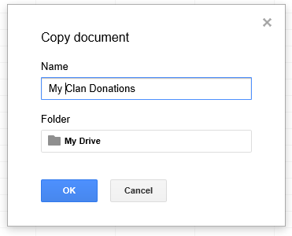
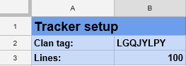
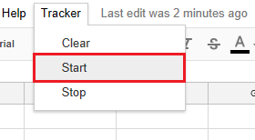
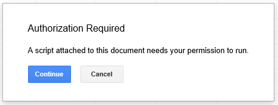
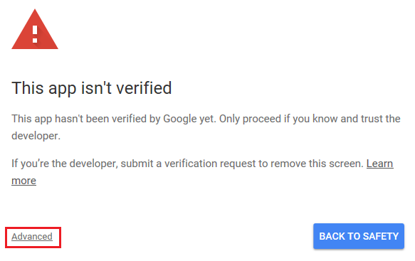
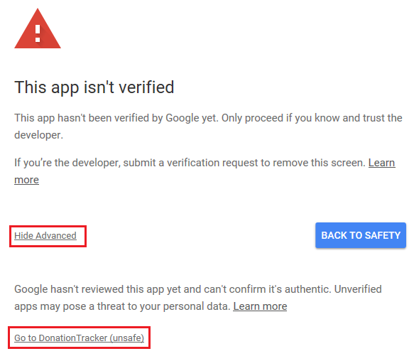
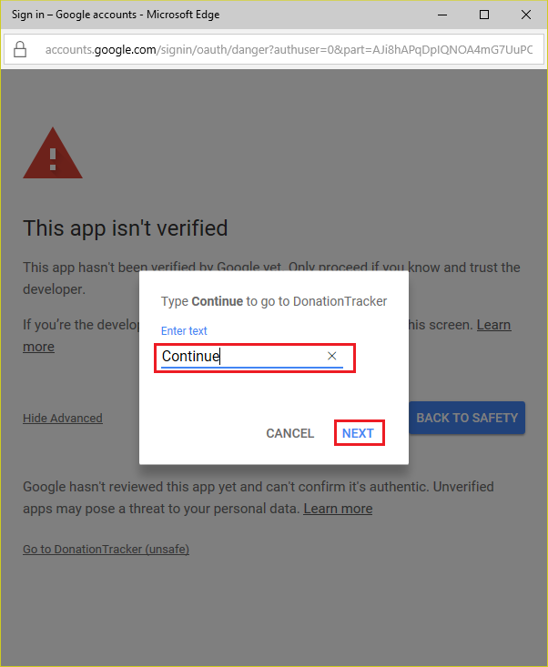
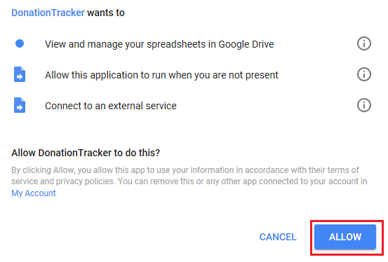
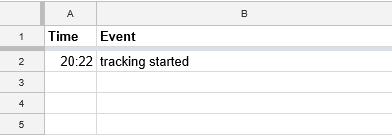

Open Donation Tracker Template.
Make a copy of the template (File > Make a copy...).

Edit the name for the document and click OK.
Select Setup-tab and set the clan tag of your clan.

Click Tracker > Start from the menu (works only in desktop version)

Click Continue

Click Advanced

Click Go to DonationTracker (unsafe)

Type Continue and click NEXT

Click ALLOW

Tracking is now started.
